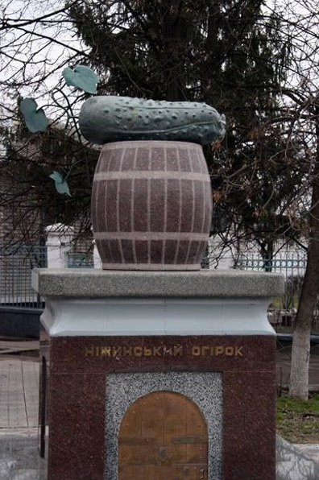

Історія ніжинськіх огірків
з малесенькім доповненнями від студента
З історії Первухінських огірків
Первухінські огірки — огірки особливого «первухінського» сорту (зараз багатьма вважається втраченим), а також більш поширене — огірки, що вирощують на Ніжинщині, зокрема приготовані традиційним способом соління, в тому числі на місцевому консервному комбінаті.
Вважається, що першими селекціонерами, засолювачами і розповсюджувачами Первухінських огірків були місцеві греки, що оселилися тут у середині XVII століття після перемоги українців у Національно-Визвольній війні 1648—57 років — тоді спеціальним універсалом від 5 травня 1657 року гетьман Хмельницький надав грекам право на самоврядування, звільнив від сплати будь-яких податків і дозволив не виконувати державні повинності. Греки-прибульці швидко освоїлися і розгорнули широкомасштабну торгівлю в Україні, встановили ділові зв'язки з Австрією, Німеччиною, Італією, Польщею, оркостаном, Туреччиною, вони розбудовували Ніжин (звели церкву, школу, магістрат) і займались сільським господарством у околицях. Саме з Греції, за переказами, переселенці привезли з собою насіння мініатюрних огірків, незнаних досі в Україні. У заплаві річки Остер вони почали вирощувати ці огірки, відтак солити їх за своїм особливим рецептом. Приготовлені в такий спосіб хрусткі огірочки виявилися чудовою закускою і були популярними в окрузі. Незабаром вирощування і приготування ніжинських огірків поширилося на ближні села, зокрема Бобрик та Липовий Ріг.
Слава про смакові якості огірка швидко росла. потьомкіну, як розповідали сучасники, вони настільки припали до смаку, що під час другої російсько-турецької війни він посилав за ними гінців за сотні верст з-під Очакова. А 1787 року, типу російська імператриця катерина ІІ, відвідуючи Україну, на шляху до Криму, скуштувала ніжинські огірки, які потьомкін завбачливо наказав приготувати, і дала наказ, виголосивши історичну фразу:«Впредь неизменно поставлять нежинские огурцы к царскому столу в Петербург»(і не вдавило катрусю...).Так ніжинські делікатеси зненацька стали джерелом гарного прибутку для міста, а також засобом збуту іншої місцевої сільськогосподарської продукції.
За переказами, з розширенням кордонів російської імперії на південь і заснуванням міста Одеси 1793 року, коли ніжинські греки почали масово переїжджати туди, лишаючи місто, за багаторічну гостинність, вони ніби-то подарували городянам насіння своїх огірків і розкрили секрети їхнього соління, так що вже в середині XIX століття вирощування і засолювання ніжинських огірків стало в місті звичною справою.
Промисловість
З 1850 року почався розвиток промисловості по засолюванню огірків. Справу почав житель міста на ймення Яресько, який виготовив кілька десятків трьохквартних бочечок «пікуля» на оцті і почав продаж продукту в місті та навколишніх ярмарках. Спочатку товар мав невеликий попит.
На промислову основу місцеві огірки у 3-й чверті XIX ст. поставили підприємці-євреї Гольденберги. Саме завдяки їм хрусткий продукт почали споживати за межами Ніжина не тільки члени царської родини, але й пересічні мешканці багатьох міст України та оркостану. А в 1879 році про ніжинські огірки вперше довідуються свинособаки з москви.
Відтоді місцева огіркова промисловість успішно розвивається, і 1897 року поставлено своєрідний рекорд — в Ніжині було засолено 100 вагонів огірків. Соління з Ніжина також почали вивозити до Копенгагена, Берліна, Парижа, Лондона, Стокгольма (загалом до 1917 року продукт поставлявся до 56 країн світу).
До Жовтневого перевороту 1917 року підприємство Гольденбергів фактично лишалось монополістом у виробництві засолених хрустких ніжинських огірків. Після того, як російський цар Микола ІІ зрікся трону, поставки до петрограда нарешті припинилися. А з початком громадянської війни, цей вид продукції взагалі перестали випускати, а завод розграбували.
Лише 1927 року, тобто вже в есересері, на основі старого підприємства розпочав роботу. У радянські часи Ніжинський консервний комбінат став найвідомішим у есересері виробником консервованої плодово-овочевої продукції та експортував соління до 70 країн світу. Але в самому радянському союзі банка ніжинських огірків (з етикеткою «Ніжинські») лишалася незмінним дефіцитом.
Клімат та місцеві чорноземи стали підґрунтям для вирощування відомих «ніжинських» огірків на ланах поблизу Ніжина. У радянські часи угіддя колишнього колгоспу «ленінський шлях» (потім «Правда») давали на переробку до Ніжинського консервного комбінату понад 1000 тон за рік, при цьому врожаї «ніжинських» у сприятливі роки перевищували 200 центнерів з гектара. На збір врожаю огірків щороку запрошували охочих і присилали за разнарядками — від піонерів до пенсіонерів. Вагомий вклад у популяризацію «ніжинських корнішонів» внесли землероби довколішніх сіл, в тому числі і села Безуглівка.
У 1990-ті роки під час економічної кризи обсяги виробництва ніжинських огірків зменшилися. Однак слава ніжинського огірка не втрачена і сьогодні. Замовлення на поставку цього продукту надходять як з близького, так і з далекого зарубіжжя — ніжинські делікатеси експортуються більш ніж у 30 країн світу. А місцевий консервний комбінат успішно розвивається у складі Fozzy Group.
2004 року першу партію знаних ніжинських огірків відправлено до столу британської королеви Єлизавети ІІ — Королівський двір оцінив якість продукції і вирішив постійно замовляти знамениті овочеві делікатеси.
У січні 2021 р. селікціонери з дослідної станції «Маяк» повідомили, що на основі «ніжинського огірка» виведено новий сорт «Олімп», який родить 65 днів на рік.
Сорти, ґрунти і засолювання
У кулінарних довідниках сказано, що ніжинський огірок — найкращий для соління. При засолюванні в огірках цього сорту не утворюється порожнеч. Крім того, солоні ніжинські огірки мають відмінний смак. Зеленець ніжинського огірка має циліндричну форму, середня його вага — 90—120 г, довжина — 9—13 см, шкірка темно-зеленого кольору зі світлими смугами, що доходять до половини плоду, поверхня ребриста і крупнобугриста. Крім того, ніжинський огірок міг зберігатися в бочці роками, не втрачаючи високих смакових якостей.
Те, що сорт ніжинського огірка втрачений, підтверджується не всіма місцевими агрономами. Однак, беззаперечним лишаються факти, що Чорнобильська катастрофа, погіршивши екологічну ситуацію в Україні, призвела до значних втрат у вирощуванні ніжинських огірків через хворобу несправжньої борошнистої роси, що значно розповсюдилася і замалим не знищила сорт, на переконання місцевих фахівців; а також те, що нові зарубіжні сорти й гібриди, які з'явилися на насіннєвому ринку держави не йдуть в жодне порівняння з ніжинським за смаком, ароматом і засолювальними властивостями.
Успіхом слід вважати те, що в результаті наукової селекційної роботи на основі ніжинських сортів створено новий гібрид під назвою Левадний F1. Учені стверджують, що цей гібрид за смаковими й засолювальними якостями не поступається оригіналу, i головне — він стійкіший до хвороб, пристосований до несприятливих кліматичних умов, до того ж ранньостиглий. Левадний F1 — бджолоопилювальний гібрид із переважно жіночими квітками, призначений для вирощування у відкритому ґрунтi. М'якоть у плодів соковита, ніжна, хрустка, без гіркоти.
Інший секрет ніжинських огірків становить ґрунт, адже тільки в наш час українські науковці з'ясували, що ніжинські ґрунти містять багато іонів срібла, завдяки яким овоч стає надзвичайно смачним і хрустким. Крім того, в Ніжині для засолювання огірків традиційно використовували джерельну воду, а в її складі чимало кальцію — це надає огіркам особливого хрускоту. Ось чому численні спроби продукувати «справжні ніжинські огірочки» поза межами Ніжина, в тому числі і ніжинськими греками, що переселилися до Одеси, назвавши свою вулицю Ніжинською і започаткувавши там соління огірків, завжди зазнавали фіаско.
Ну і звичайно, не варто забувати про класичні традиції соління огірків, які зберігають місцеві господарі — справжні знавці своєї справи.
Ніжинський огірок у культурі
Ніжинський огірок не лише став справжнім брендом, а й візитівкою міста Ніжин і навіть культурним явищем. Зафіксовані навіть анекдоти про овоч.
А у грудні 2005 року за ідеєю Ніжинського місьвиконкому огірку було встановлено унікальний пам'ятник, що за повідомленнями на той час став першим пам'ятником овочу в Україні.
Ніжинський огірок з рідкісного для країни зеленого граніту лежить на діжці, яка, в свою чергу, розташувалась на імпровізованому постаменті — льосі для зберігання солінь. Матеріал для пам'ятника був привезений аж із Італії. І за словами автора проекту Леоніда Воробйова, над імпортною брилою довелося немало потрудитися, але після тривалих роздумів і невдалих спроб із завданням чудово впоралися са́ме місцеві умільці.
